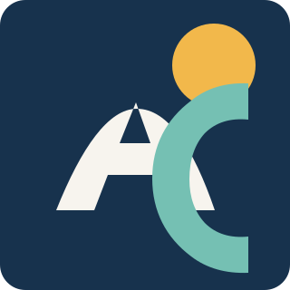

Who I Am
I am Andre Castro, a learner focused on becoming confident with full-stack web development. I am developing a practical foundation by building small applications, testing them, documenting them, and preparing them for review.
Online CV
I am a software development student building practical projects with HTML, CSS, Python, Django, Git, and database-backed web applications. I enjoy turning confusing requirements into working, readable projects and improving a little with each assignment.
Published URL: https://andrecastro23.github.io/MyCV/

Brief professional introduction
I am Andre Castro, a learner focused on becoming confident with full-stack web development. I am developing a practical foundation by building small applications, testing them, documenting them, and preparing them for review.
I like the problem-solving side of programming: breaking a large task into smaller steps, understanding how the pieces connect, and creating something useful from a blank folder.
My goal is to keep improving as a developer by building clear, maintainable projects and learning the habits used in professional software teams.
Current technical focus
Training and development
Studying web development, object-oriented programming, Django applications, database design, testing, deployment, and software design principles.
Project-based experience
Built static HTML and CSS pages, task management designs, sticky notes apps, e-commerce features, and news application functionality using Django patterns.
Practised writing tests, fixing review feedback, preparing submission folders, using GitHub repositories, and deploying static websites with GitHub Pages.
Professional links